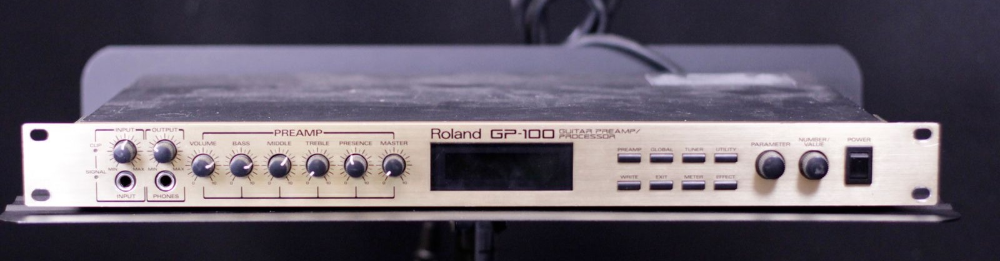

Roland GP-100 Patches and Things

I recently acquired a classic, Roland GP-100 guitar effects processor from a friend. He is a wicked guitarist, multi-instrumentalist virtuoso, and owned it for decades. Naturally it's loaded with custom Jimmy Page and Zappa patches, EVH, ZZ Top, etc!
I recorded a dump of the GP memory onto an external MIDI track in Logic Pro. And this is the resulting MIDI sysex file of the patches. It's untested, because I've never tried it before, and I only have one GP-100!
Here's what Google has to say on the matter:
To perform a System Exclusive (SysEx) memory dump (backup) or bulk load (restore) on your Roland GP-100, you will use the unit's [UTILITY] menu functions.
- MIDI OUT of the GP-100 connects to the MIDI IN of your computer interface.
- MIDI IN of the GP-100 connects to the MIDI OUT of your computer interface.
Step-by-Step SysEx Bulk Dump (Backup)
- Open a SysEx utility program on your computer (such as MIDI-OX for Windows or SysEx Librarian for macOS) and set it to "Receive Manual Dump" or "Record".
- Press the [UTILITY] button on the front panel of the GP-100.
- Rotate the [PARAMETER] knob until "MIDI Bulk Dump" appears.
- Use the [VALUE] knob to specify the block or range of data you wish to backup.
- Press the [WRITE] button to begin sending the memory data.
- Save the captured data as a
.midor.syxfile on your computer.
Step-by-Step SysEx Bulk Load (Restore)
- Press the [UTILITY] button.
- Rotate the [PARAMETER] knob until "MIDI Bulk Load" is displayed on the screen. The unit will enter a standby state to wait for incoming MIDI streams.
- Transmit from Computer: Open your saved file in your SysEx utility software and send or transmit.
- The GP-100 screen will display data packet reception status. Once the file transmission from the software stops, the unit automatically processes and overwrites the designated user memory spots.
- Press [EXIT] to return to the normal Play screen.
Anyway...
If you have it dialed-in, please check it out and see if it works for you.
Btw, here is a cool write-up on the device. And here are its technical specifications.
Here are the patch types and names that I tediously compiled by hand. (And unfortunately, markdown tables don't appear to work with Statocles - Ugh :()
| # | Type | Name |
| --: | :-----: | :----------------- |
| 1 | vintage | Blue top loose |
| 2 | basic | SLDN super lead |
| 3 | harmony | Reversed 2 |
| 4 | dual | Van Halen brown |
| 5 | dual | Van Halen brown |
| 6 | vintage | Zappa wah wah |
| 7 | vintage | Les-wired2 |
| 8 | vintage | Hadden=ed |
| 9 | basic | Blow by blow dry |
| 10 | basic | No.1 combo |
| 11 | delay | Zeppelin phase |
| 12 | basic | Heartbeat:Belew |
| 13 | basic | Heartbeat:Belew |
| 14 | delay | Good times bad.. |
| 15 | vintage | Tremolo Page |
| 16 | vintage | Terry Kath= lead |
| 17 | vintage | Jimmy Page trans |
| 18 | vintage | Jimmy Page slap |
| 19 | harmony | Reversed 2 |
| 20 | vintage | Zappa wah wah |
| 21 | vintage | Comp'd Marshall |
| 22 | vintage | Strat Marshall |
| 23 | vintage | Pork pie hat |
| 24 | vintage | Strat med gain |
| 25 | dual | Van Halen 5150 II |
| 26 | vintage | Strat med gain |
| 27 | vintage | Clean top |
| 28 | vintage | Hi gain Marshall |
| 29 | basic | Full blown drive |
| 30 | basic | Eric Johnson cln |
| 31 | vintage | Eric Johnson OD2 |
| 32 | basic | Clear cut echo |
| 33 | basic | Eric Johnson cl+ |
| 34 | vintage | Eric Johnson OD1 |
| 35 | dual | Super Butcher |
| 36 | delay | Eric high phase |
| 37 | harmony | Reversed 2 |
| 38 | harmony | One Time |
| 39 | vintage | Sweet 1959 lead |
| 40 | basic | Heartbeat:Belew |
| 41 | vintage | Les-wired1 |
| 42 | vintage | Townshend Paul 1 |
| 43 | vintage | Blues top boost |
| 44 | vintage | Blues top boost |
| 45 | vintage | Cant u hear me? |
| 46 | vintage | Strat Marshall |
| 47 | vintage | Blues top boost |
| 48 | vintage | Blues top boost |
| 49 | vintage | Joe's 1959 lead |
| 50 | vintage | Cant u hear me? |
| 51 | delay | Eric high phase |
| 52 | vintage | Blues top boost |
| 53 | vintage | Jimmy Page= live |
| 54 | vintage | Wah wah two |
| 55 | vintage | Cant u hear me? |
| 56 | vintage | Only rock n roll |
| 57 | vintage | Rolling Stones |
| 58 | vintage | Blues top boost |
| 59 | vintage | Blues top boost |
| 60 | basic | Chors cut echo |
| 61 | vintage | Start me up |
| 62 | vintage | Live at Leeds 1 |
| 63 | vintage | Lead tube amp ==- |
| 64 | vintage | Wah wah two |
| 65 | delay | Modulated phase |
| 66 | delay | Modulated phase |
| 67 | vintage | Townshend Paul 1 |
| 68 | vintage | Duane tremolo |
| 69 | vintage | Small amp |
| 70 | vintage | Les-clean¥ |
| 71 | vintage | Les-blues¥ |
| 72 | vintage | Les-wired1 |
| 73 | vintage | Les-wired2 |
| 74 | vintage | Wah wah two |
| 75 | basic | Heartbeat:Belew |
| 76 | vintage | Les-wired2 |
| 77 | basic | Blow by blow dry |
| 78 | vintage | Les-wired2 |
| 79 | vintage | Hadden=ed2 |
| 80 | dual | Van Halen brown |
| 81 | vintage | Jimmy Page vox |
| 82 | vintage | Joe's 1959 lead |
| 83 | dual | Van Halen brown |
| 84 | vintage | Jimmy Page vox |
| 85 | basic | Heartbeat:Belew |
| 86 | dual | Too Rollinstoned |
| 87 | basic | Robin Trower 1 |
| 88 | vintage | Black Crowes= |
| 89 | delay | Fripp echo |
| 90 | delay | Montana lead |
| 91 | vintage | Townshend Paul 1 |
| 92 | dual | Too Rollinstoned |
| 93 | delay | Lark's tongues II |
| 94 | vintage | Lead tube amp ==- |
| 95 | vintage | Jag-wired1 |
| 96 | dual | Super Butcher |
| 97 | basic | Cutting comp |
| 98 | vintage | Blues top boost |
| 99 | basic | Blues combo |
| 100 | dual | Super sizzler |
| 101 | basic | Bright twin |
| 102 | vintage | Mild jazz |
| 103 | delay | Halen big bottom |
| 104 | vintage | Blues top boost |
| 105 | delay | 70s fusion OD-1 |
| 106 | basic | Turbo cry baby |
| 107 | harmony | Major chord |
| 108 | delay | Phasing chorus |
| 109 | vintage | Slow gear SG-1 |
| 110 | delay | Heavy drive |
| 111 | delay | Brian echo |
| 112 | basic | Mellow comp |
| 113 | basic | Fat MS stack |
| 114 | basic | Rockin tweed #1 |
| 115 | delay | West coast |
| 116 | delay | Wah phase |
| 117 | basic | Octave down |
| 118 | delay | Modulated phase |
| 119 | basic | Metal 5150 lead |
| 120 | basic | Metal 5150 lead |
| 121 | delay | Turbo OD-2 lead |
| 122 | basic | Cutting comp |
| 123 | basic | Fat echo stack |
| 124 | delay | JC-120 clean |
| 125 | delay | 60s back beat |
| 126 | basic | Fuzz wah wah |
| 127 | harmony | Sizzlin harmony |
| 128 | delay | Flanging phase |
| 129 | vintage | Vibrato VB-2 |
| 130 | basic | Turbo OD-2 |
| 131 | basic | Metallic dist |
| 132 | basic | American twin |
| 133 | delay | Fat super Satch |
| 134 | basic | UK crunch-bright |
| 135 | basic | Blues drive |
| 136 | delay | Pedal phase 1 |
| 137 | harmony | Detuned octave |
| 138 | delay | Clean phase |
| 139 | vintage | Panning |
| 140 | delay | Fuzz lead |
| 141 | delay | Rock woman drive |
| 142 | delay | Orange comp |
| 143 | vintage | Mild fuzz lead |
| 144 | basic | JC-120 daydream |
| 145 | delay | Venture lead |
| 146 | delay | Mild wah twin |
| 147 | delay | Pedal 2fret down |
| 148 | delay | Hi band flanger |
| 149 | vintage | Auto wah |
| 150 | basic | Woman tone |
| 151 | delay | Metal backing |
| 152 | delay | Ducking delay |
| 153 | delay | Punk stack |
| 154 | delay | Whacky pluck |
| 155 | basic | Blues combo |
| 156 | vintage | Pedal VCF reso |
| 157 | harmony | Diminished pan |
| 158 | delay | Flange drive |
| 159 | vintage | Pedal feedbacker |
| 160 | delay | Stereo echo |
| 161 | basic | Fat BG drive |
| 162 | delay | Analog delay |
| 163 | delay | Tempo drive |
| 164 | vintage | Rhythm master |
| 165 | basic | Crunch SLDN |
| 166 | delay | Flanging wah |
| 167 | harmony | Guitar soundtrack |
| 168 | vintage | Growling pan |
| 169 | vintage | Tremelo wah |
| 170 | delay | Presence lead |
| 171 | delay | Sweet turbo OD |
| 172 | basic | Jazz tone |
| 173 | delay | BG power stack |
| 174 | delay | Acousticrisp |
| 175 | delay | Detuned drive |
| 176 | delay | JC clear pedal wah |
| 177 | delay | Twin lead in C |
| 178 | vintage | Vibrato wah |
| 179 | vintage | Metal vibro wah |
| 180 | basic | Sweet distortion |
| 181 | delay | No Quarter fuzz |
| 182 | vintage | Mild sustain |
| 183 | delay | Metal distortion |
| 184 | delay | Echoplex twin |
| 185 | basic | MS 1959 crunch |
| 186 | delay | Pedal phase 2 |
| 187 | harmony | Reversed octave |
| 188 | delay | Phasing echo |
| 189 | vintage | Metal vibro pan |
| 190 | basic | Grange dist |
| 191 | vintage | Sweet 1969 lead |
| 192 | vintage | Mellow tone |
| 193 | delay | Bridge of sighs |
| 194 | delay | Tap delay twin |
| 195 | delay | JC-120 drive |
| 196 | delay | Comp wah drive |
| 197 | harmony | 4th pitch shift |
| 198 | vintage | Crying pan |
| 199 | harmony | Synth bass |
| 200 | dual | Two Geddy overdr |
Yep. Markdown tables don't work with Statocles
#Roland #GP100 #MIDI #SYSEX